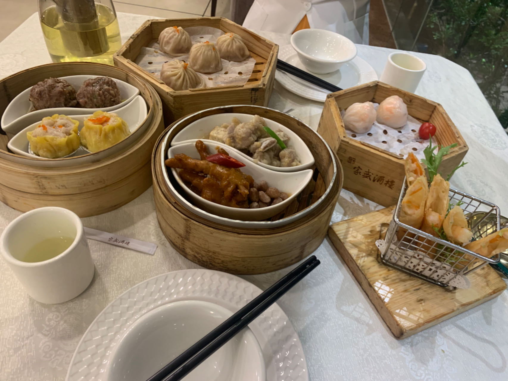
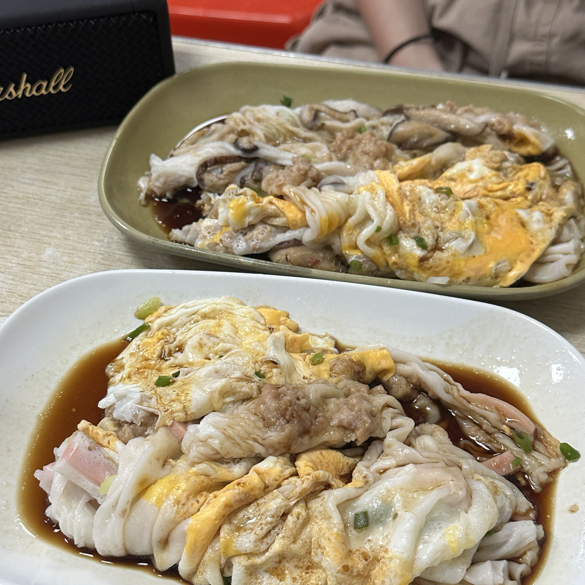

Cantonese Cuisine
Pork is top meat here, and in a lush rice-growing region, rice is plentiful. This is the place to celebrate good eating with a dim sum lunch. Seafood is also in its glory in this, what many consider to be the best of all Chinese cuisine regions. Familiar from home might be dishes such as sweet and sour chicken or pork, or beef with tomatoes. I suggest avoiding shark fin soup due to the shark being an endangered creature and the fishing methods used are often too cruel.
DIM SUM
Dim sum is a traditional Chinese meal made up of small plates of dumplings and other snack dishes and is usually accompanied by tea.
- SIU MAI
- - Made with pork
- HAR GOW
- - Made with shrimp
- LO MAI GAI
- - It contains glutinous rice filled with chicken, Chinese mushrooms, Chinese sausage, scallions, and sometimes dried shrimp or salted egg
CHEUNG FUN
Cheung Fun are sheets of rice noodles presented as rolls stuffed with various fillings.
